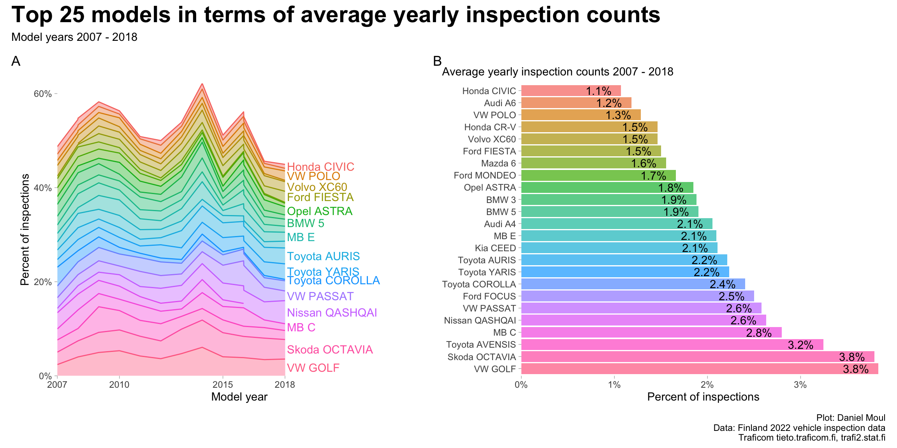
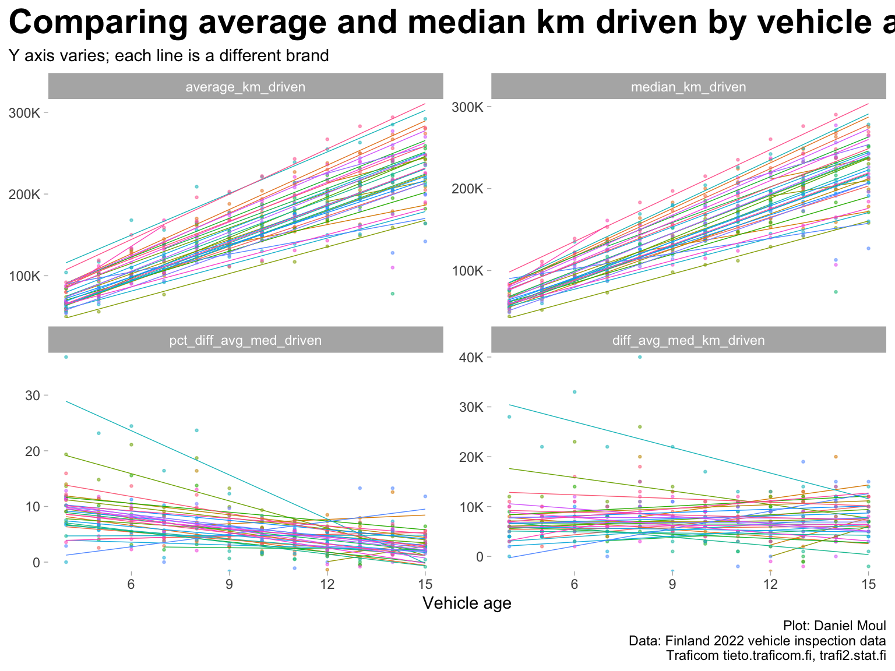
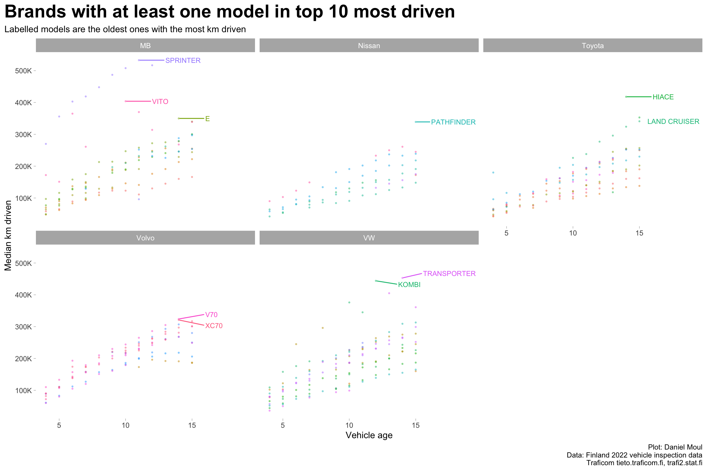
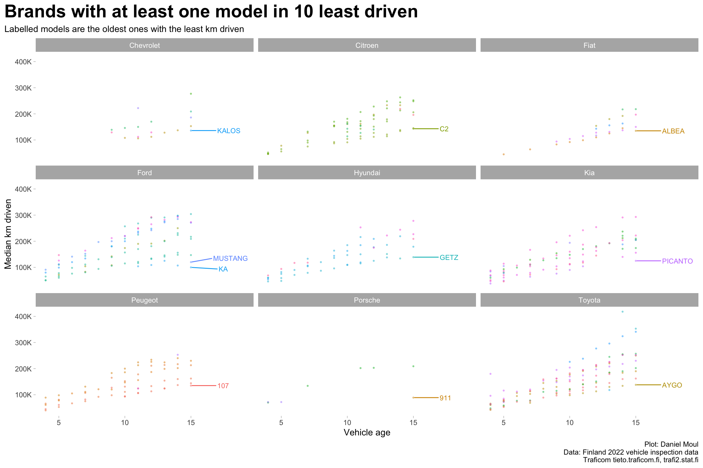

The data set includes passenger vehicles in Finland comprising 307 models from 35 brands in model years 2007 - 2019 which were inspected during 2022. There are 1107322 passenger vehicles in the data set. Each row of data is a unique combination of (model_year, brand, model). The data set include the following data columns:
Show the code
##| column: page-rightdta_working_set |>select(model_year, brand, model, inspection_count, failure_rate, ends_with("driven")) |>sample_n(5) |>gt() |>tab_header(md("**Sample rows of data: primary data fields**")) |>tab_options(table.font.size =10)
Table 1.1: Sample data - primary data fields
Sample rows of data: primary data fields
model_year
brand
model
inspection_count
failure_rate
average_km_driven
median_km_driven
2012
Hyundai
IX35
434
0.3203
167000
163000
2018
Kia
SPORTAGE
285
0.0632
73000
70000
2011
Skoda
SUPERB
1586
0.2207
273000
260000
2015
Volvo
XC60
1689
0.0669
162000
158000
2009
Volvo
V70
2536
0.2066
318000
305000
The data set includes reasons for failure in many cases: the most common reason, second most common, and third most common:
Show the code
##| column: page-rightdta_working_set |>select(model_year, brand, model, contains("reason")) |>sample_n(5) |>gt() |>tab_header(md("**Sample rows of data: failure reason data fields**")) |>tab_options(table.font.size =10)
Table 1.2: Sample data - failure reason data fields
Sample rows of data: failure reason data fields
model_year
brand
model
failure_reason_1
failure_reason_2
failure_reason_3
2017
Kia
SORENTO
Not provided
Not provided
Not provided
2017
Skoda
FABIA
Brakes
Not provided
Not provided
2013
Audi
A6
Suspension
Front axle
Brakes
2018
Citroen
C3
Steering joints and rods
Not provided
Not provided
2014
BMW
1
Not provided
Not provided
Not provided
Over the years, brands introduce and cease production of models. Even when manufactured, in some years models may not have been purchased or imported and registered in Finland, or were not inspected in 2022. Thus models appear in the data for various periods of years:
inspection_count seems to be depressed in 2014, 2016 and 2019 when considered together (Figure 1.4 panel A), and this seems to be consistent for most brands (panel B). Is this a data reporting or data management issue?
Given the above, I exclude the following from the working data set:
Brands that don’t show up in the data at least 3 times. Each row of data is one combination of (model_year, brand, model). This filter excludes the Smart brand.
Model year 2019, since many brands are missing
Campervans, since they are not “normal” passenger vehicles
I inherit the following filters in the source data set:
A model is included for a model_year if inspection_count >= 100
Inspection failure reasons are provided if at least 10% of the inspections for a model and model year have that reason (I assume this is calculated separately for first, second and third most common reasons)
That leaves 306 models in 34 brands over 13 model years (2007 - 2019) with 1588 rows of data remaining in the 2022 inspections data set and 1100203 vehicles. This constitutes 99.4% of the original data.
1.3 Most common brands and models
The ten most popular brands provide about 75% percent of the inspected vehicles (Figure 1.6) while the top 25 models provide about half (Figure 1.7).
data_for_plot <- dta_working_set |># TODO: is this working? weighted.mean(), because zero values shouldn't affect mean (should it?)mutate(avg_inspection_count =weighted.mean(inspection_count, w = inspection_count), .by = brand_model) |>mutate(brand_model =fct_reorder(brand_model, avg_inspection_count)) |>mutate(brand_model =fct_lump(brand_model, n = model_cutoff_n, w = avg_inspection_count),brand_model =if_else(as.character(brand_model) =="Other","Various", brand_model),brand =if_else(as.character(brand_model) =="Various","Various", brand) ) |>reframe(inspection_count =sum(inspection_count),.by =c(model_year, brand, brand_model) ) |>mutate(pct_count_model_year = inspection_count /sum(inspection_count),.by = model_year) |>mutate(avg_inspection_count =weighted.mean(inspection_count, w = inspection_count),.by = brand_model) |># it's a reasonable assumption that every model will have a unique avg_inspection_countmutate(pct_avg_inspection_count = avg_inspection_count /sum(unique(avg_inspection_count))) |>mutate(brand_model =fct_reorder(brand_model, avg_inspection_count),brand =fct_reorder(brand, avg_inspection_count))min_model_year <-min(data_for_plot$model_year)max_model_year <-max(data_for_plot$model_year)plot_breaks = data_for_plot |>distinct(model_year) |>filter(model_year %%5==0| model_year == min_model_year | model_year == max_model_year)model_year_range <-glue("{min(data_for_plot$model_year)} - {max(data_for_plot$model_year)}")data_for_label_tmp <- data_for_plot |>filter(model_year == max_model_year) |>distinct(brand_model, .keep_all =TRUE) |>arrange(pct_avg_inspection_count) data_for_label <- data_for_label_tmp |>mutate(brand_model =fct_reorder(brand_model, avg_inspection_count))p1 <- data_for_plot |>filter(brand_model !="Various") |>ggplot() +geom_area(aes(model_year, pct_count_model_year, color = brand_model, fill = brand_model, group = brand_model),alpha =0.4, show.legend =FALSE, ) +geom_text(data = data_for_label |>filter(brand_model !="Various"),aes(model_year +0.1, pct_count_model_year, color = brand_model,label =ifelse(model_year ==max(model_year),as.character(brand_model),"") ),position =position_stack(vjust =0.5), hjust =0, #vjust = 0.5,check_overlap =TRUE,show.legend =FALSE) +scale_x_continuous(breaks = plot_breaks$model_year,expand =expansion(mult =c(0, 0.1))) +scale_y_continuous(labels =label_percent(),expand =expansion(mult =c(0, 0))) +coord_cartesian(xlim =c(min_model_year, max_model_year +5),ylim =c(0, NA)) +theme(panel.border =element_blank()) +labs(x ="Model year",y ="Percent of inspections",tag ="A" )p2 <- data_for_label |>mutate(brand_model =fct_rev(brand_model)) |>filter(pct_count_model_year >0) |>filter(brand_model !="Various") |>ggplot(aes(pct_avg_inspection_count, brand_model, fill = brand_model)) +geom_col(na.rm =TRUE, alpha =0.7, show.legend =FALSE) +geom_text(aes(label =percent(pct_avg_inspection_count, accuracy =0.1)),hjust =1, nudge_x =-0.001) +#scale_x_continuous(labels =label_percent(),expand =expansion(mult =c(0, 0.02))) +scale_fill_hue(direction =-1) +expand_limits(x =0) +theme(panel.border =element_blank()) +labs(subtitle =glue("Average yearly inspection counts {model_year_range}"),x ="Percent of inspections",y =NULL,tag ="B" )p1 + p2 +plot_annotation(title =glue("Top {model_cutoff_n} models in terms of average yearly inspection counts"),subtitle =glue("Model years {model_year_range}"),caption = my_caption )

Figure 1.7: Inspections by model
1.4 Distance driven and model year
The data set includes median_km_driven and average_km_driven. Over time the values of these two summary statistics converge within 10% (Figure 1.8). Here I start using vehicle_age instead of model_year, because it’s a more natural way of thinking about vehicles over time being driven more and experiencing more failures.
Show the code
data_for_plot <- all_models_yearly |>mutate(model_year =as.numeric(model_year),vehicle_age =2022- model_year) |>filter(brand !="All brands", model_year <2019) |>complete(model_year, brand,fill =list(inspection_count =0, model ="All models") )data_for_plot |>select(vehicle_age, model_year, brand, ends_with("driven")) |>mutate(diff_avg_med_km_driven = average_km_driven - median_km_driven,pct_diff_avg_med_driven =100* (average_km_driven / median_km_driven -1)) |>pivot_longer(cols =ends_with("driven"),names_to ="variable",values_to ="value") |>mutate(variable =fct_relevel(variable, "diff_avg_med_km_driven", after =Inf)) |>ggplot() +geom_point(aes(vehicle_age, value, group = brand, color = brand), na.rm =TRUE, size =0.5, alpha =0.5,show.legend =FALSE) +geom_smooth(aes(vehicle_age, value, group = brand, color = brand),na.rm =TRUE, method ="lm", formula ='y ~ x', se =FALSE,linewidth =0.25, alpha =0.5,show.legend =FALSE) +scale_y_continuous(labels =label_number(scale_cut =cut_short_scale()),expand =expansion(mult =c(0, 0.02))) +facet_wrap(~ variable, scales ="free_y") +labs(title ="Comparing average and median km driven by vehicle age",subtitle ="Y axis varies; each line is a different brand",x ="Vehicle age",y =NULL,caption = my_caption )

Figure 1.8: Average and median km driven by model year for the brands
As implied in Figure 1.8 above, there is a very strong correlation among vehicle_age, average_km_driven, and median_km_driven. Thus to avoid collinearity, when doing regressions in Chapter 3 Modeling failure rate, I use median_km_driven or vehicle_age in a regression model (but not both).
Half the 10 models driven the farthest are light commercial vans (Figure 1.9):
Mercedes-Benz Sprinter and Vito
Volkswagen Kombi and Transporter
Toyota HiAce
Two are SUVs:
Nisan Pathfinder
Toyota Land Cruiser
The remainder include one sedan and two wagons:
Mercedes-Benz E, which is frequently used as a taxi [wikipedia]
Volvo V70 and XC70
Show the code
data_for_plot <- dta_working_set |>mutate(median_km_driven_k = median_km_driven /1000)data_for_plot_labels <- data_for_plot |>filter(median_km_driven_k ==max(median_km_driven_k),.by = model) |>slice_max(order_by = median_km_driven_k, n = brand_cutoff_n)data_for_plot %>%inner_join(., data_for_plot_labels |>distinct(brand),by =join_by(brand) ) |>ggplot(aes(vehicle_age, median_km_driven_k, color = model, group = model)) +geom_point(size =0.5, alpha =0.4,show.legend =FALSE) +geom_text_repel(data = data_for_plot_labels,aes(vehicle_age, median_km_driven_k, label = model, color = model, group = model),size =3, hjust =0, nudge_x =2,show.legend =FALSE) +scale_y_continuous(labels =label_number(suffix ="K")) +coord_cartesian(xlim =c(NA, 19)) +facet_wrap( ~ brand) +theme(legend.position ="bottom") +labs(title =glue("Brands with at least one model in top {brand_cutoff_n} most driven"),subtitle ="Labelled models are the oldest ones with the most km driven",x ="Vehicle age",y ="Median km driven",caption = my_caption )

Figure 1.9: Distance driven by model year for brands with at least one model among the most driven
Most of the 10 models driven the least are city cars (Figure 1.10):
Supermini cars for city use:
Chevrolet Kalos
Citroen C2
Hyundai Getz
City cars
Ford Ka
Kia Picanto
Peugeot 107
Toyota Aygo
Subcompact
Fiat Albea, which was produced in Turkey for developing markets; allegedly not sold in Western Europe [wikipedia])
Two are sports cars
Ford Mustang
Porsche 911
Show the code
data_for_plot <- dta_working_set |>mutate(median_km_driven_k = median_km_driven /1000)data_for_plot_labels <- data_for_plot |>filter(model_year ==min(model_year)) |>filter(median_km_driven_k ==min(median_km_driven_k),.by = model) |>slice_min(order_by = median_km_driven_k, n = brand_cutoff_n)data_for_plot %>%inner_join(., data_for_plot_labels |>distinct(brand),by =join_by(brand) ) |>ggplot(aes(vehicle_age, median_km_driven_k, color = model, group = model)) +geom_point(size =0.5, alpha =0.4,show.legend =FALSE) +geom_text_repel(data = data_for_plot_labels,aes(vehicle_age, median_km_driven_k, label = model, color = model, group = model),size =3, hjust =0, nudge_x =2,show.legend =FALSE) +scale_y_continuous(labels =label_number(suffix ="K")) +coord_cartesian(xlim =c(NA, 19)) +facet_wrap( ~ brand) +theme(legend.position ="bottom") +labs(title =glue("Brands with at least one model in {brand_cutoff_n} least driven"),subtitle ="Labelled models are the oldest ones with the least km driven",x ="Vehicle age",y ="Median km driven",caption = my_caption )

Figure 1.10: Distance driven by model year for brands with at least one model among the least driven